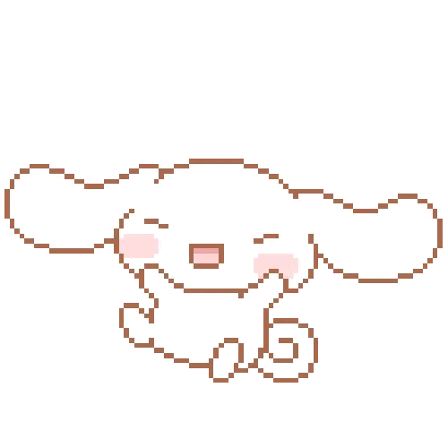
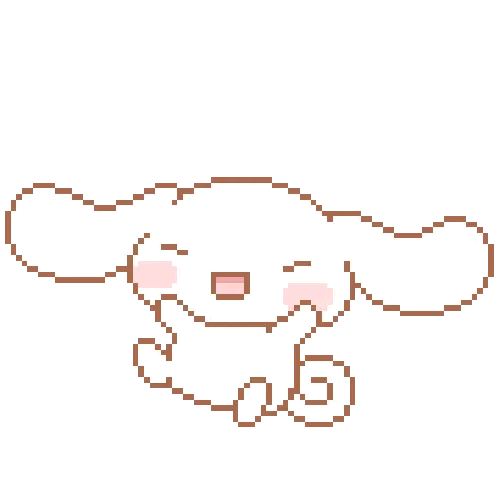
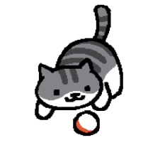

⋆⭒˚.⋆ Click on the files and folders to get to know me better ⋆⭒˚.⋆
 github.txt
github.txt
 linkedin.txt
linkedin.txt
 email.txt
email.txt
⋆⭒˚.⋆ Click on the files and folders to get to know me better ⋆⭒˚.⋆

github.txt
linkedin.txt
email.txt
Hello! I'm Kayla Keplinger, a 23 year old web developer passionate about interactive design! I graduated from Cleveland State University in May 2025 and currently live in Seven Hills, Ohio.
I'm currently a self employed entrepreneur running my own Etsy shop! I sell handmade crocheted toys and I am hoping to branch out to selling clay charms. In my free time I like to weight lift, hang out with my friends, and study Japanese.
Self Employed Entrepreneur | Etsy shop: @madebykjk | August 2024 to Present
The Global Career Accelerator Web Developer Trainee | August 2024 to December 2024
Retail & Food Service Roles | 2020 to 2024 Kohl's, Chipotle, JOANN's, Giant Eagle
My Github is @kayjkep.
You can view my LinkedIn profile here! Feel free to add me if you'd like!
My Original Portfolio Website | Nov 2024
Simple Pomodoro Website | Aug 10, 2025
NASA Psyche Web-based Game | Sponsored by ASU/NASA
Book Reccomendation Website | April 2025
Feel free to contact me at keplingerkay02@gmail.com!